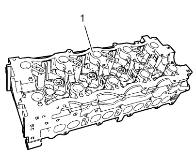
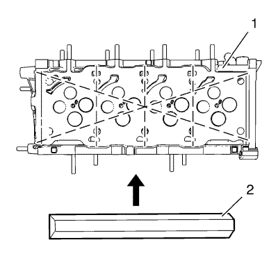
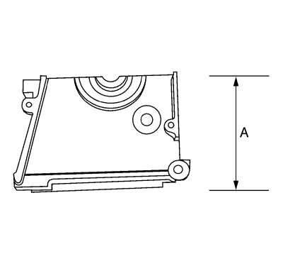
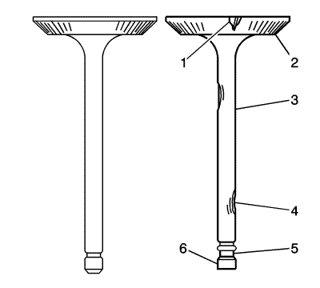

Limpieza y comprobación de la culata
Procedimiento de limpieza

- Elimine cualquier resto antiguo de sellador de roscas, material de la junta o sellador.
- Limpie todas las superficies de la culata (1) con disolvente no corrosivo.
Advertencia: Consulte Advertencia sobre el uso de gafas de seguridad y aire comprimido en la sección Prólogo.
- Sople con aire comprimido todos los conductos de reparto de aceite.
- Quite los depósitos de carbonilla de las cámaras de combustión.
Examen visual
- Compruebe los siguientes estados de las superficies de cojinete de árbol de levas de la culata:
| • | Estrías o picado excesivo |
| • | Decoloración por sobrecalentamiento |
| • | Deformación debida a un desgaste excesivo |
| • | Si los muñones de cojinete del árbol de levas están rayados o dañados, debe sustituir la culata. NO rectifique los muñones de cojinete del árbol de levas. |
- Si se produce alguno de los problemas antes citados en las superficies de cojinete de árbol de levas, sustituya la culata.
- Examine la culata en busca de lo siguiente:
| • | Grietas, puntos defectuosos o corrosión en las cámaras de combustión |
| • | Suciedad en los conductos de aceite. Limpie los conductos hasta eliminar toda la suciedad. |
| • | Fugas de refrigerante o daños en la superficie de sellado de la cara del bloque--Si hay fugas de refrigerante, mida el alabeo de la superficie como se describe en Medición de la culata - Comprobación de la planeidad de la superficie. |
| • | Daños en cualquiera de las superficies de junta |
| • | Áreas quemadas o erosionadas en la cámara de combustión |
| • | Grietas en las tubuladuras de escapes y cámaras de combustión |
| • | Grietas externas en los pasos de agua |
| • | Obstrucciones en los pasos de admisión o escape |
| • | Obstrucciones en los pasos del sistema de refrigeración |
| • | Tapones de panel de radiador oxidados, defectuosos o con fugas |
- Si la culata está agrietada o dañada, debe sustituirla. No se permite soldar o remendar la culata.
Medición de la culata
Juego de muñón de árbol de levas
Precaución:Consulte Precaución con las fijaciones en la sección Prólogo.
- Monte el sombrerete del cojinete del árbol de levas en la culata sin el árbol de levas.
- Monte los tornillos de la tapa del árbol de levas y apriételos a 28 N·m (21 lib. pie).
- Mida los cojinetes de árbol de levas mediante un micrómetro de interiores.
- Reste el diámetro del muñón de árbol de levas al diámetro del cojinete de árbol de levas. El resultado será el juego de funcionamiento. Si el juego de funcionamiento supera los valores especificados y los muñones de árbol de levas se encuentran dentro de los valores especificados, sustituya la culata. Consultar Especificaciones mecánicas del motor .
Alineación de muñón de árbol de levas
- Compruebe que las superficies de cojinete de árbol de levas de la culata no presentan imperfecciones o arañazos que puedan obstaculizar juegos adecuados del árbol de levas. Repare imperfecciones o arañazos menores.
Nota: Cubra los cojinetes del árbol de levas y el árbol de levas con aceite de motor nuevo. Consultar Adhesivos, líquidos, lubricantes y selladores .
- Monte el árbol de levas en la culata.
- Monte los sombreretes de cojinete de árbol de levas.
- Monte los tornillos de la tapa del árbol de levas y apriételos a 28 N·m (21 lib. pie).
- Asegúrese de que el árbol de levas gira sin problemas en la culata. Si el árbol de levas no gira sin problemas, sustituya la culata.
Inspección de la planeidad de la cubierta

- Asegúrese de que las cubiertas de las culatas están limpias y libres de material de junta.
- Inspeccione la presencia de imperfecciones o rayas en la superficie que pudieran impedir un sellado adecuado de la junta de la culata.
- Coloque una regla (2) como en el gráfico indicado en la superficie de la cubierta de la culata (1).
- Mida la tolerancia entre el borde recto y el lado de las culatas utilizando un calibrador de separaciones en 4 puntos a lo largo del borde recto.
- Compruebe si las superficies de sellado están deformadas o torcidas. Las superficies de sellado de la culata deben estar planas con una desviación máxima de 0,05 mm (0,002 pulg.).

- Mida la altura de la culata de superficie de sellado a superficie de sellado (A). La altura de la culata debe ser de 129,9-130,1 mm (5,1142-5,1220 pulgs.). Si la altura de la culata está fuera de los valores especificados, sustituya la culata.
Inspección de las válvulas

- Revise la válvula íntegramente en busca de daños y de los siguientes problemas:
| • | Corrosión en el área de asentamiento de la válvula (1) |
| • | Ausencia de margen en la válvula (2) |
| • | Vástago de la válvula curvado (3) |
| • | Corrosión o desgaste excesivo del vástago (4) |
| • | Ranuras de la llave de válvula desgastadas (5) |
| • | Punta de la válvula desgastada (6). |
- Si observa alguno de estos problemas, sustituya la válvula.
- Revise los muelles de válvula. Si los extremos de los muelles de las válvulas no son paralelos, sustituya el muelle de la válvula.
- Compruebe si hay desgaste o cortes en la superficie del asiento del muelle de la válvula de los rotadores de las válvulas. Sustituir según sea necesario.
| © Copyright Chevrolet. Reservados todos los derechos |